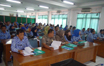
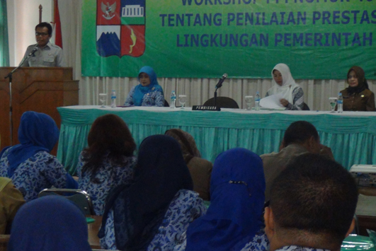
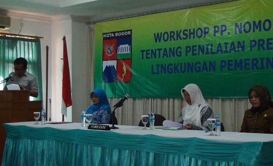

BKPP : Ada Dua Unsur Penilaian Terhadap Kinerja PNS
19 November 2013
Kepala Badan Kepegawaian Pendidikan dan Pelatihan (BKP) Kota Bogor Dwi Roman Pujo mengungkapkan, untuk mengukur prestasi dan kinerja PNS setidaknya ada unsur penilaian.
Kedua unsur dimaksud, meliputi, pertama SKP (Sasaran Kerja Pegawai) dengan tolak ukur rencana kerja dan pencapaian target dan kedua yaitu Perilaku Kerja (PK) yang meliputi sikap dan tindakan PNS sesuai diatur dalam ketentuan perundang-undangan yang berlaku.
Dwi memaparkan hal tersebut ketika membuka workshop Peraturan Pemerintah (PP) Nomor 46 tahun 2011 tentang penilaian prestasi kerja Pegawai Negeri Sipil (PNS) dilingkungan Pemerintah Kota Bogor di Puslitbang Gizi Jl. Dr. Semeru No.63 Kota Bogor Senin (18/11/2013).
Ia menjelaskan, PP Nomor 46 tahun 2011 merupakan pengganti Peraturan Pemerintah Nomor 10 tahun 1979 tentang penilaian pelaksanaan pekerjaan PNS, serta perka Badan Kepegawaian Negara (BKN) Nomor 1 tahun 2013 tentang ketentuan pelaksanaan PP Nomor 46 tahun 2011. “PP Nomor 46 tahun 2011 pemberlakuannya dilakukan mulai Januari 2014, “ jelasnya.

Dwi memandang Workshop perlu diselenggarakan, agar seluruh ketentuan yang ada di dalam PP Nomor 46 tahun 2011 dapat dipahami oleh seluruh PNS dilingkungan Pemerintah Kota Bogor. Karena tujuan dari dibuatnya Peraturan Pemerintah Nomor 46 tahun 2011 ini adalah untuk bisa mendorong meningkatkan prestasi dalam kinerja PNS.
Diakui Dwi bahwa pandangan masyarakat terhadapa kinerja PNS pada umumnya masih jauh dari memuaskan, selama ini kinerja PNS dinilai belum efektif dan efisien dan pelayanan-pelayanan yang ada pun belum sesuai dengan harapan masyarakat.
Oleh karena itu, kata Dwi, dengan Peraturan Pemerintah Nomor 46 tahun 2011 PNS didorong dan diharuskan untuk terus berusaha meningkatkan kualitas diri dan meningkatkan kompentesi diri agar dapat menghasilkan kinerja yang lebih baik dan berkualitas.
“Kita berharap para PNS dapat memahami tanggung jawab dan kewajiban dalam melayani masyarakat, karena yang dinilai dari kinerja PNS bukan hanya bagaimana melayani masyarakat dengan baik, tetapi juga berintegritas dan berkomitmen dalam menjalankan kewajiban dengan disiplin yang tinggi dan kerjasama yang baik didalam tim, “ paparnya.
Sementara itu Sekretaris BKPP Kota Bogor selaku penyelenggara Workshop Hj. Tri Lestari Soniyati. Kegiatan ini dilaksanakan berjasama BKPP dengan Kantor Regional III BKN Bandung. Peserta Workshop berjumlah 200 orang yang terbagi dalam dua angkatan.

Angkatan I pada hari Senin dan Selasa, 18 dan 19 November 2013 dengan peserta 100 orang meliputi Kaur TU Sekolah dan Kasubag Umum dan Kepegawaian SKPD. Sedangkan angkatan II pada hari Rabu dan Kamis tanggal 20 dan 21 November 2013 dengan peserta 100 orang meliputi dari Kasubag TU UPTD dan Sekretrais Kelurahan.
Adapun materi Workshop meliputi ketentuan pelaksanaan peraturan pemerintah nomor 46 tahun 2011. Panduan penyusuanan dan penilaian sasaran kerja PNS. Penilaian capaian sasaran kerja PNS. Standar nilai prestasi kerja PNS serta penggunaan aplikasi sasaran kerja pegawai.
Narasumber Workshop yaitu pejabat dari lngkungan kantor regional III Badan Kepegawaian Negara (BKN) Bandung.